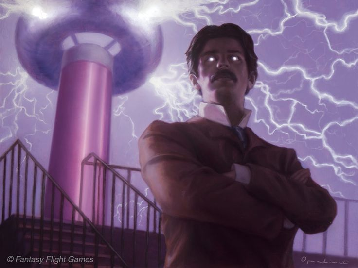
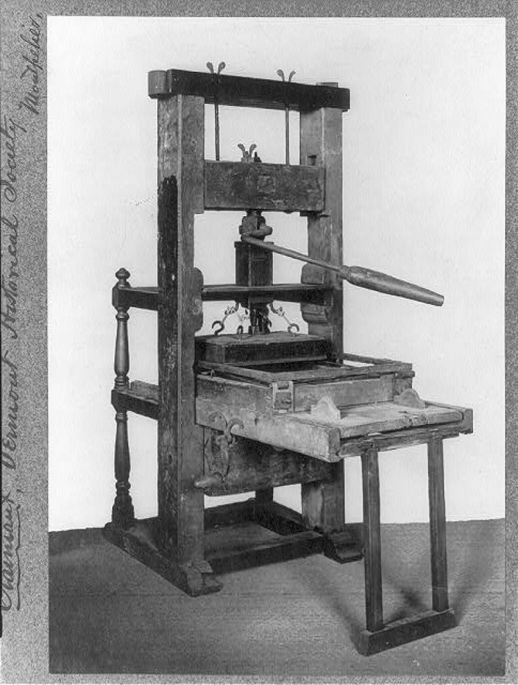

Создание ядерного оружия началось как гонка против времени. Ученые, включая Эйнштейна и Оппенгеймера, опасались, что нацистская Германия разработает бомбу первой. Их опасения подтолкнули США к запуску масштабной программы с бюджетом в $2 млрд и привлечением 130 000 человек 14. Однако к 1945 году стало ясно: Германия проиграла войну без атомного оружия. Несмотря на это, проект продолжился — теперь уже как инструмент политического влияния. Испытание «Тринити» и бомбардировки Хиросимы и Нагасаки показали миру беспрецедентную разрушительную силу, сравнимую с апокалипсисом 78. Сразу после войны атомная монополия США длилась недолго. Уже в 1949 году СССР испытал свою бомбу, отчасти благодаря данным, переданным разведкой 4. Так началась холодная война — противостояние, где ядерный арсенал стал главным аргументом. Гонка вооружений привела к созданию десятков тысяч боеголовок, а доктрина «взаимного гарантированного уничтожения» (MAD) превратилась в хрупкий щит против глобальной войны. Страх перед «ядерной зимой» сдерживал конфликты, но и породил паранойю, как в случае Карибского кризиса 1962 года, когда мир оказался на грани катастрофы 37.
Манхэттенский проект дал толчок не только военным разработкам, но и мирным технологиям. Ядерная энергетика, лучевая терапия в медицине, методы изотопного анализа — все это стало побочными продуктами исследований 25. Однако обратной стороной стали Чернобыль и Фукусима, напомнившие о рисках радиации. Кроме того, распространение ядерных технологий породило новые угрозы: от аварий до терроризма. Даже сегодня страны вроде Северной Кореи используют наследие проекта для шантажа мирового сообщества 37.
| № | Страна | Количество боеголовок |
|---|---|---|
| 1 | Россия | 5,449 |
| 2 | США | 5,277 |
| 3 | Китай | 600 |
| 4 | Франция | 290 |
| 5 | Великобритания | 225 |
| 6 | Индия | 180 |
| 7 | Пакистан | 170 |
| 8 | Израиль | 90 |
| 9 | КНДР | 50 |

До победы переменного тока электричество оставалось локальным и дорогим удовольствием. Система Эдисона, основанная на постоянном токе, позволяла передавать энергию лишь на короткие расстояния — не более 1,5 км от электростанции. Это означало, что для освещения целого города требовались десятки мелких генераторов, что делало электрификацию экономически невыгодной. Переменный ток, напротив, благодаря трансформаторам мог передаваться на сотни километров с минимальными потерями. Это открыло путь к созданию крупных электростанций, таких как Ниагарская ГЭС (1895 г.), которая снабжала энергией целые регионы. Без этого прорыва массовая электрификация городов, заводов и домов была бы невозможна 110.
Победа AC привела к резкому удешевлению электроэнергии. Если при Эдисоне электричество было доступно лишь богатым кварталам Нью-Йорка и Лондона, то к началу XX века оно стало проникать в сельские районы и развивающиеся страны. Компания Вестингауза, используя патенты Теслы, создала инфраструктуру, которая легла в основу современных энергосистем. Это ускорило промышленную революцию: фабрики получили доступ к дешевой энергии, появились электродвигатели, а позже — бытовая техника. Экономика перешла от пара к электричеству, что стало фундаментом для технологического бума XX века 67.
До Гутенберга книги были роскошью. Их переписывали вручную монахи, тратя месяцы на создание единственного экземпляра. Стоимость такой работы была огромной: например, для одной пергаментной Библии требовалось 250 овечьих шкур 4. Печатный станок сократил затраты времени и ресурсов в десятки раз. Уже к 1480 году в Европе работало более 110 типографий, выпустивших около 8 миллионов книг 7. Знания, ранее доступные лишь элите, теперь могли получить купцы, ремесленники и даже крестьяне. Это привело к взрывному росту грамотности и подготовило почву для эпохи Просвещения. Литература перестала быть уделом избранных. Появились новые жанры — романы, поэтические сборники, сатирические произведения. Авторы вроде Франсуа Рабле или Мигеля де Сервантеса обрели массовую аудиторию. Печатный станок также democratized искусство: гравюры и иллюстрации стали доступны не только богатым меценатам, но и обычным горожанам.
Печать стандартизировала знания. Раньше каждая рукопись содержала ошибки переписчиков или их субъективные дополнения. Теперь ученые могли работать с идентичными текстами, что ускорило развитие науки. Труды Коперника, Галилея и Ньютона быстро распространялись, стимулируя научную революцию. Кроме того, печатные учебники сделали образование более доступным. В XVI веке появились первые газеты — например, венецианские «гадзетты», которые продавались за мелкую монету и содержали сводки новостей со всего мира 3. Печатный станок помог формированию национальных языков и идентичностей. До этого латынь была языком науки и религии, но печать сделала выгодным выпуск книг на местных наречиях. Во Франции, Германии и Англии началась стандартизация языков, что укрепило единство государств. Кроме того, печатные памфлеты и прокламации стали мощным инструментом пропаганды. Например, в России Иван Фёдоров, напечатавший «Апостола» в 1564 году, не только распространил религиозные тексты, но и заложил основы кириллической книжной культуры 8.

До начала XX века единственными источниками азота для растений были навоз, компост и чилийская селитра — природный ресурс, запасы которого стремительно истощались. Когда в 1913 году заработал первый завод по производству аммиака в Оппау, мир получил доступ к дешевому и эффективному удобрению. Азотные подкормки увеличили урожайность пшеницы, кукурузы и риса в 2–3 раза, позволив прокормить растущее население планеты. Сегодня почти половина населения Земли зависит от пищи, выращенной с использованием синтетических азотных удобрений 59. Однако за этот прогресс пришлось заплатить высокую цену. Удобрения, которые должны были оставаться в почве, начали проникать в воду, воздух и пищевые цепи, нарушая хрупкий баланс природы.
Азотные удобрения — один из главных источников парниковых газов. При их производстве и использовании выделяется закись азота (N₂O), которая в 250 раз мощнее углекислого газа по согревающему эффекту. Сельское хозяйство ответственно за 5% глобальных выбросов — больше, чем авиация и судоходство вместе взятые 58. Но проблема не ограничивается климатом. До 50% внесенного в почву азота вымывается дождями в реки и озера, вызывая эвтрофикацию — бурный рост водорослей, которые поглощают кислород и убивают рыбу. В некоторых регионах, например в Мексиканском заливе, из-за стоков с полей уже образовались «мертвые зоны» площадью с небольшие страны 814.